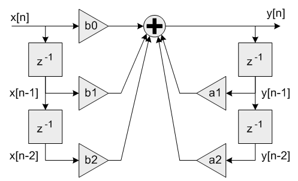
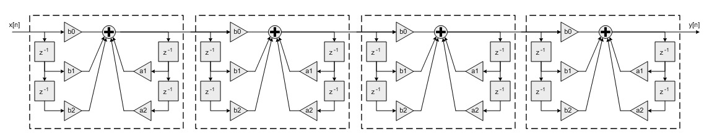

High Precision Q31 Biquad Cascade Filter¶
-
void
riscv_biquad_cas_df1_32x64_init_q31(riscv_biquad_cas_df1_32x64_ins_q31 *S, uint8_t numStages, const q31_t *pCoeffs, q63_t *pState, uint8_t postShift)¶
-
void
riscv_biquad_cas_df1_32x64_q31(const riscv_biquad_cas_df1_32x64_ins_q31 *S, const q31_t *pSrc, q31_t *pDst, uint32_t blockSize)¶
-
group
BiquadCascadeDF1_32x64 This function implements a high precision Biquad cascade filter which operates on Q31 data values. The filter coefficients are in 1.31 format and the state variables are in 1.63 format. The double precision state variables reduce quantization noise in the filter and provide a cleaner output. These filters are particularly useful when implementing filters in which the singularities are close to the unit circle. This is common for low pass or high pass filters with very low cutoff frequencies.
The function operates on blocks of input and output data and each call to the function processes
blockSizesamples through the filter.pSrcandpDstpoints to input and output arrays containingblockSizeQ31 values.- Algorithm
Each Biquad stage implements a second order filter using the difference equation: A Direct Form I algorithm is used with 5 coefficients and 4 state variables per stage.
Coefficients
b0, b1 and b2multiply the input signalx[n]and are referred to as the feedforward coefficients. Coefficientsa1anda2multiply the output signaly[n]and are referred to as the feedback coefficients. Pay careful attention to the sign of the feedback coefficients. Some design tools use the difference equation In this case the feedback coefficientsa1anda2must be negated when used with the NMSIS DSP Library. Higher order filters are realized as a cascade of second order sections.
numStagesrefers to the number of second order stages used. For example, an 8th order filter would be realized withnumStages=4second order stages.A 9th order filter would be realized with
numStages=5second order stages with the coefficients for one of the stages configured as a first order filter (b2=0anda2=0). The
pStatepoints to state variables array. Each Biquad stage has 4 state variablesx[n-1], x[n-2], y[n-1],andy[n-2]and each state variable in 1.63 format to improve precision. The state variables are arranged in the array as:The 4 state variables for stage 1 are first, then the 4 state variables for stage 2, and so on. The state array has a total length of
4*numStagesvalues of data in 1.63 format. The state variables are updated after each block of data is processed, the coefficients are untouched.- Instance Structure
The coefficients and state variables for a filter are stored together in an instance data structure. A separate instance structure must be defined for each filter. Coefficient arrays may be shared among several instances while state variable arrays cannot be shared.
- Init Function
There is also an associated initialization function which performs the following operations:
Sets the values of the internal structure fields.
Zeros out the values in the state buffer. To do this manually without calling the init function, assign the follow subfields of the instance structure: numStages, pCoeffs, postShift, pState. Also set all of the values in pState to zero.
Use of the initialization function is optional. However, if the initialization function is used, then the instance structure cannot be placed into a const data section. To place an instance structure into a const data section, the instance structure must be manually initialized. Set the values in the state buffer to zeros before static initialization. For example, to statically initialize the filter instance structure use where
numStagesis the number of Biquad stages in the filter;pStateis the address of the state buffer;pCoeffsis the address of the coefficient buffer;postShiftshift to be applied which is described in detail below.- Fixed-Point Behavior
Care must be taken while using Biquad Cascade 32x64 filter function. Following issues must be considered:
Scaling of coefficients
Filter gain
Overflow and saturation
Filter coefficients are represented as fractional values and restricted to lie in the range
[-1 +1). The processing function has an additional scaling parameterpostShiftwhich allows the filter coefficients to exceed the range[+1 -1). At the output of the filter’s accumulator is a shift register which shifts the result bypostShiftbits.This essentially scales the filter coefficients by
2^postShift. For example, to realize the coefficients set the Coefficient array to: and setpostShift=1
The second thing to keep in mind is the gain through the filter. The frequency response of a Biquad filter is a function of its coefficients. It is possible for the gain through the filter to exceed 1.0 meaning that the filter increases the amplitude of certain frequencies. This means that an input signal with amplitude < 1.0 may result in an output > 1.0 and these are saturated or overflowed based on the implementation of the filter. To avoid this behavior the filter needs to be scaled down such that its peak gain < 1.0 or the input signal must be scaled down so that the combination of input and filter are never overflowed.
The third item to consider is the overflow and saturation behavior of the fixed-point Q31 version. This is described in the function specific documentation below.
Functions
-
void
riscv_biquad_cas_df1_32x64_init_q31(riscv_biquad_cas_df1_32x64_ins_q31 *S, uint8_t numStages, const q31_t *pCoeffs, q63_t *pState, uint8_t postShift) Initialization function for the Q31 Biquad cascade 32x64 filter.
- Return
none
- Coefficient and State Ordering
The coefficients are stored in the array
pCoeffsin the following order: whereb1xanda1xare the coefficients for the first stage,b2xanda2xare the coefficients for the second stage, and so on. ThepCoeffsarray contains a total of5*numStagesvalues.The
pStatepoints to state variables array and size of each state variable is 1.63 format. Each Biquad stage has 4 state variablesx[n-1], x[n-2], y[n-1],andy[n-2]. The state variables are arranged in the state array as: The 4 state variables for stage 1 are first, then the 4 state variables for stage 2, and so on. The state array has a total length of4*numStagesvalues. The state variables are updated after each block of data is processed; the coefficients are untouched.- Parameters
[inout] S: points to an instance of the high precision Q31 Biquad cascade filter structure[in] numStages: number of 2nd order stages in the filter[in] pCoeffs: points to the filter coefficients[in] pState: points to the state buffer[in] postShift: Shift to be applied after the accumulator. Varies according to the coefficients format
-
void
riscv_biquad_cas_df1_32x64_q31(const riscv_biquad_cas_df1_32x64_ins_q31 *S, const q31_t *pSrc, q31_t *pDst, uint32_t blockSize) Processing function for the Q31 Biquad cascade 32x64 filter.
- Return
none
- Details
The function is implemented using an internal 64-bit accumulator. The accumulator has a 2.62 format and maintains full precision of the intermediate multiplication results but provides only a single guard bit. Thus, if the accumulator result overflows it wraps around rather than clip. In order to avoid overflows completely the input signal must be scaled down by 2 bits and lie in the range [-0.25 +0.25). After all 5 multiply-accumulates are performed, the 2.62 accumulator is shifted by
postShiftbits and the result truncated to 1.31 format by discarding the low 32 bits.Two related functions are provided in the NMSIS DSP library.
riscv_biquad_cascade_df1_q31() implements a Biquad cascade with 32-bit coefficients and state variables with a Q63 accumulator.
riscv_biquad_cascade_df1_fast_q31() implements a Biquad cascade with 32-bit coefficients and state variables with a Q31 accumulator.
- Parameters
[in] S: points to an instance of the high precision Q31 Biquad cascade filter[in] pSrc: points to the block of input data[out] pDst: points to the block of output data[in] blockSize: number of samples to process